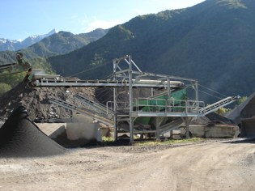
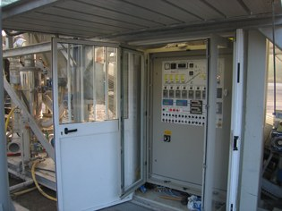
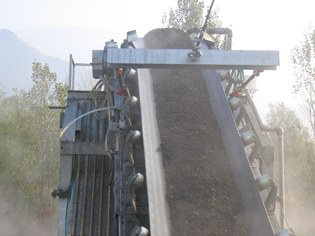

I rifiuti inerti dei cantieri tornano aggregati per strade e calcestruzzi, e asfalto a freddo.
Per conferire o sapere se un materiale si può portare, chiamate l'impianto: 0461 751154.
Il gruppo di frantumazione OCRM da 200 tonnellate all'ora, il granulatore OCRM, il mulino OMT e due vagli selezionatori separano il materiale in 6 classi granulometriche diverse. L'impianto toglie il ferro e le impurità più leggere.



Dal fresato delle strade facciamo conglomerato bituminoso a freddo, senza emissioni in atmosfera né quando si produce né quando si stende. L'impianto, interamente automatizzato, produce anche calcestruzzi con aggregati riciclati.
Dai rifiuti di demolizione e dagli scarti siderurgici escono materie prime con marcatura CE: aggregati per l'impiego stradale (UNI EN 13242), per conglomerati bituminosi (UNI EN 13043) e per calcestruzzo (UNI EN 12620).